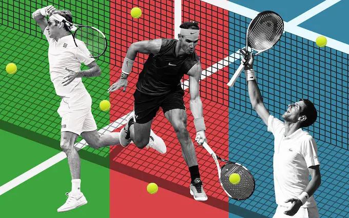
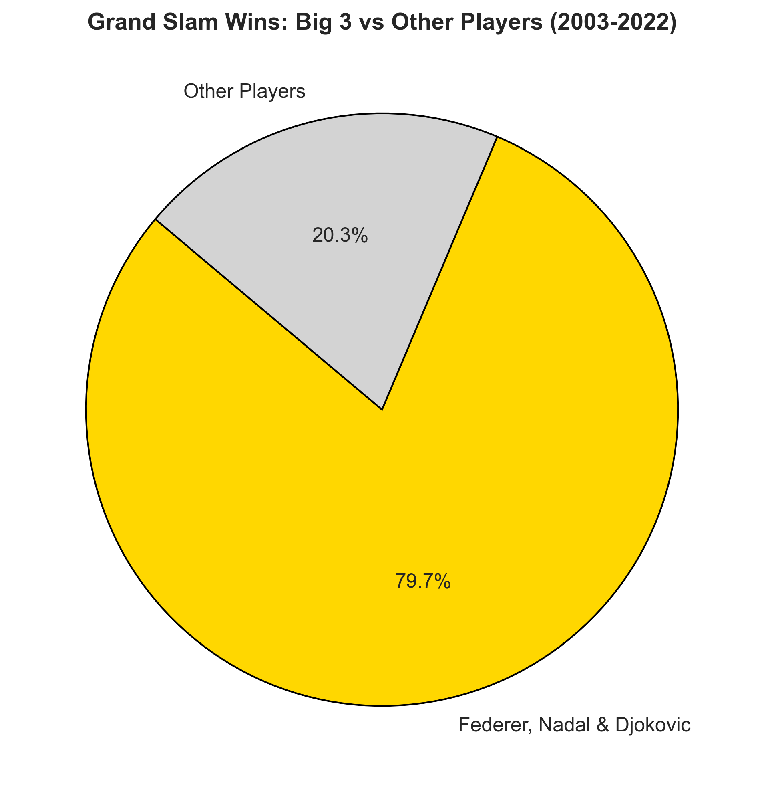
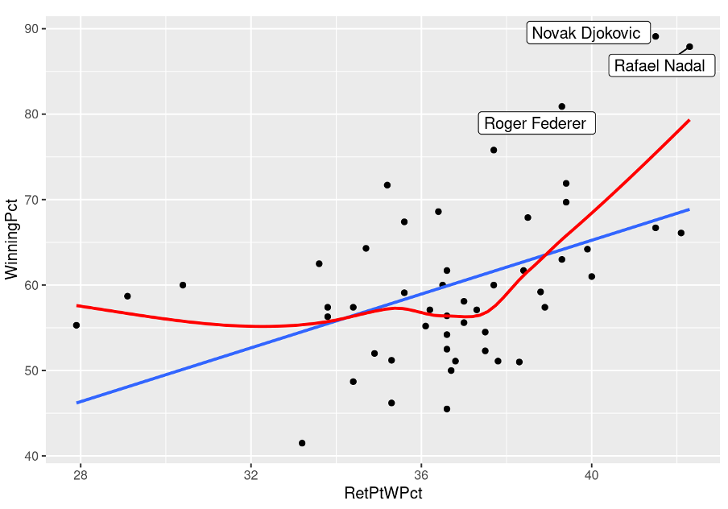

Tennis has long been defined by the dominance of three extraordinary players—Novak Djokovic, Rafael Nadal, and Roger Federer. Their achievements, spanning almost two uncontested decades, have set an unparalleled benchmark in the sport. Their rivalry, marked by intense matches and moments of brilliance, has captivated fans around the world, pushing the boundaries of what was thought possible in tennis.
For me, growing up in the leafy suburbs of Melbourne, watching their plays at the Australian Open with my family became a warm, nostalgic tradition. Whether we gathered around that small TV in the living room, all squeezed together, or simply let the matches play softly in the background, it was always a moment that brought us closer, especially as we cheered on our favourite three players. However, with their gradual transition away from professional play, a new generation of rising stars is poised to reshape the competitive landscape.
This report aims to provide:
A quantitative exploration of the Big 3’s dominance
A data-driven analysis of how the sport has evolved, and
A statistical approach to identifying the key attributes that define a tennis superstar.
Leveraging analytical techniques—including visualisations, regressions, and principal component analysis (PCA) - this study uncovers patterns in performance metrics, player trajectories, and the factors influencing success at the highest level. This report offers insights into the shifting dynamics of professional tennis and highlights the emerging talents most likely to leave their mark on the sport.

Preparing the Data
Data Collection
Data used for this report includes:
Association of Tennis Professionals (ATP) Match Statistics by Jeff Sackmann, containing raw match summaries from major ATP tournament from 1968 to 2024, including details such as match duration, match outcomes, and basic statistics such as Aces or Break Points Saved.
Code
import pandas as pdimport matplotlib.pyplot as pltimport seaborn as sns##### 1. Association of Tennis Professionals (ATP) Match Statistics #####years =range(1968, 2025)base_url ="https://raw.githubusercontent.com/JeffSackmann/tennis_atp/master/atp_matches_{}.csv"# Read and concatenate all CSV filesdfs = []for year in years: url = base_url.format(year)try: df = pd.read_csv(url) dfs.append(df)# print(f"Successfully loaded: {year}")exceptExceptionas e:print(f"Failed to load {year}: {e}")# Combine all dataframesatp_match_stats = pd.concat(dfs, ignore_index=True)# atp_match_stats.to_csv("data/atp_1968-2024.csv", index=False)atp_match_stats = pd.read_csv('data/atp_1968-2024.csv')
ATP Player Information by Jeff Sackmann, containing the personal attributes of ATP players, including details such as player birth year, country of origin, and other personal attributes.
Code
##### 2. ATP Player Information #####base_url ="https://raw.githubusercontent.com/JeffSackmann/tennis_atp/refs/heads/master/atp_players.csv"player_info = pd.read_csv(base_url)
ATP Rankings by Jeff Sackmann, containing the weekly rankings of all ATP players.
Code
##### 3. ATP Rankings #####base_url ="https://raw.githubusercontent.com/JeffSackmann/tennis_atp/refs/heads/master/atp_rankings_{}s.csv"years = ['00', '10', '20', '90', '80', '70']# Read and concatenate all CSV filesdfs = []for year in years: url = base_url.format(year)try: df = pd.read_csv(url) dfs.append(df)# print(f"Successfully loaded: {year}")exceptExceptionas e:print(f"Failed to load {year}: {e}")# Append current rankings up to 2024current_seed_url ="https://raw.githubusercontent.com/JeffSackmann/tennis_atp/refs/heads/master/atp_rankings_current.csv"df = pd.read_csv(current_seed_url)dfs.append(df)# Combine all dataframesplayer_seed = pd.concat(dfs, ignore_index=True)# player_seed = pd.read_csv('data/all_ranking_data.csv')
ATP Advanced Match Statistics (Manual Match Labels) by Nirodha Epasinghege Dona, Paramjit S. Gill, and Tim B. Swartz, which aggregates manually labeled shot-by-shot data from Sackmann’s open-source Match Charting Project. The primary dataset used in this report is sourced from Journal of the Royal Statistical Society Series A: Statistics in Society, Volume 188, Issue 1, January 2025, Pages 188–204.
Code
##### 4. ATP Advanced Match Statistics #####advanced_match_stats = pd.read_csv('data/Supp_1_men_data.csv')
Tennis Abstract Metrics by Jeff Sackmann, containing the Top 100 player related statistics, scraped from the site.
Code
##### 4. ATP Advanced Match Statistics #####atp_100_advanced_player_info = pd.read_csv("data/atp_100_advanced_player_info.csv")
Preprocess Data
The datasets used in this report are relatively well-maintained and structured, making them suitable for analysis with minimal preprocessing. However, before proceeding, a simple data inspection was conducted to ensure consistency, completeness, and accuracy.
Data Integrity Checks Before making any transformations, each dataset was reviewed for missing values, inconsistencies, and potential errors. This included:
Uniqueness Checks
Identifying missing or null values
Data type consistency (e.g. Change percentage-based statistics from strings to numerical values).
Handling Missing Data
One notable issue was found in the ATP Player Rankings dataset, where weekly ranking updates were not always recorded, leaving intermittent gaps in the timeline. Since player rankings are updated every Monday, missing data could result in misleading trends when analyzing ranking progression.
Code
import pandas as pdimport matplotlib.pyplot as plt# Load datasetdf = player_seed.copy()df["ranking_date"] = pd.to_datetime(df["ranking_date"], format="%Y%m%d")# Generate expected weekly range (ATP rankings update every Monday)full_date_range = pd.date_range(start=df["ranking_date"].min(), end=df["ranking_date"].max(), freq="W-MON")# Get missing weeksmissing_weeks = full_date_range.difference(df["ranking_date"].unique())# Plot rankings and missing weeksplt.scatter(df["ranking_date"], [1] *len(df), label="Available Weeks", color="blue", marker="o")plt.scatter(missing_weeks, [1] *len(missing_weeks), label="Missing Weeks", color="red", marker="x")plt.xlabel("Date")plt.ylabel("Ranking Weeks")plt.title("ATP Ranking Weeks: Missing Weeks Visualization")plt.legend()plt.xticks(rotation=45)plt.grid(True)plt.show()if missing_weeks.empty:print("✅ No missing weeks. All rankings are accounted for.")else:print(f"\n❌ Missing {len(missing_weeks)} of {len(full_date_range)} weeks\n")
❌ Missing 422 of 2680 weeks
To address this, forward filling was applied to interpolate missing dates, by assuming that a player’s ranking remained the same until the next recorded update. At the same time, it is noteworthy to mention that between 2020-03-23 and 2020-08-23, due to COVID lockdowns, many tournaments were unable to proceed, and hence ATP ranking were frozen during the period.
Code
import pandas as pd# Load datasetfinal_df = player_seed.copy()final_df["ranking_date"] = pd.to_datetime(final_df["ranking_date"], format="%Y%m%d")# Sort by player and datefinal_df = final_df.sort_values(by=["player", "ranking_date"]).reset_index(drop=True)# Generate full weekly date rangefull_date_range = pd.date_range(start=final_df["ranking_date"].min(), end=final_df["ranking_date"].max(), freq="W-MON")# Create a dataframe with all player-week combinationsplayers = final_df["player"].unique()date_expanded = pd.MultiIndex.from_product([players, full_date_range], names=["player", "ranking_date"])expanded_df = pd.DataFrame(index=date_expanded).reset_index()# Merge with original datamerged_df = expanded_df.merge(final_df, on=["player", "ranking_date"], how="left")# Forward-fill missing values (impute rank and points)merged_df["rank"] = merged_df.groupby("player")["rank"].ffill()merged_df["points"] = merged_df.groupby("player")["points"].ffill()# Remove any rows where `rank` is still NaN (for players who didn't exist in the dataset yet)merged_df = merged_df.dropna(subset=["rank"])merged_df = merged_df.reset_index(drop=True)# Save or return final dataframemerged_df.to_csv("data/imputed_ranking_data.csv", index=False)print("✅ Missing dates imputed successfully!")
✅ Missing dates imputed successfully!
Another important issue to address, is that whilst ATP rankings are mostly complete from 1985 to the present, 1982 is missing, and rankings from 1973-1984 are especially intermittent - as raw data itself was not captured during the scraping process. Therefore, we will also filter the data from the year 2000, in addition to the forward filling that was applied.
Code
# Load datasetimputed_rankings_raw = pd.read_csv("data/imputed_ranking_data.csv")imputed_rankings_raw["ranking_date"] = pd.to_datetime(imputed_rankings_raw["ranking_date"])# Remove the frozen ranking periodimputed_rankings_raw = imputed_rankings_raw[~((imputed_rankings_raw["ranking_date"] >="2020-03-23") & (imputed_rankings_raw["ranking_date"] <="2020-08-23"))]# Filter for years between 2000 and 2024imputed_rankings = imputed_rankings_raw[(imputed_rankings_raw["ranking_date"].dt.year >=2000) & (imputed_rankings_raw["ranking_date"].dt.year <=2024)]###### Rank 1 Players and The Number of Weeks at Rank 1rank_1_df = imputed_rankings[imputed_rankings["rank"] ==1]rank_1_count = rank_1_df.groupby("player").size().reset_index(name="Weeks at #1")rank_1_count = rank_1_count.sort_values(by="Weeks at #1", ascending=False)merged_df = rank_1_count.merge(player_info, left_on="player", right_on="player_id", how="left")# merged_df[['player_id', 'name_first', 'name_last', 'Weeks at #1']].head(6)
After imputation, we can verify the accuracy of the dataset by examining the top ATP rankings of leading players, particularly Djokovic, Federer, and Nadal. It’s important to note that the forward-filled dataset has been filtered to include only players active on tour from the 2000s onward.
final = atp_match_stats[( atp_match_stats['tourney_level'] =='G') & (atp_match_stats['round'] =='F')] \ .groupby('winner_name')['tourney_id'] \ .count().reset_index()# Rename and sortfinal = final.rename(columns={'tourney_id': 'Grand Slam Wins'}) \ .sort_values(by='Grand Slam Wins', ascending=False).head(10)# Set figuresns.set_theme(style="whitegrid")# Create a color gradient with the most wins highlightedcolors = sns.color_palette("viridis", len(final))highlight_color ="purple"# Special color for the top playerbar_colors = [highlight_color if i ==0else colors[i] for i inrange(len(final))]ax = sns.barplot(x="Grand Slam Wins", y="winner_name", data=final, palette=bar_colors)# Add annotations on barsfor index, value inenumerate(final["Grand Slam Wins"]): ax.text(value +0.5, index, str(value), ha="left", va="center", fontsize=12, fontweight="bold", color="black")# Titles and Labelsplt.xlabel("Number of Grand Slam Titles", fontsize=14, fontweight="bold")plt.ylabel("Player", fontsize=14, fontweight="bold")plt.title("Top 10 Grand Slam Winners (1968-2024)", fontsize=16, fontweight="bold", pad=15)sns.despine(left=True, top=True)plt.show()
The dominance of the Big Three—Roger Federer, Novak Djokovic, and Rafael Nadal—stands in stark contrast to even some of the sport’s greatest champions such as Pete Sampras, Andre Agassi, and Jimmy Connors, who each laid the foundation for modern tennis.
Their combined Grand Slam tally not only surpasses that of their predecessors but also accounts for a remarkable portion of total Grand Slam titles in the Open Era. Each of them has set records that were once thought untouchable—whether it be Federer’s elegant shot-making, Nadal’s clay-court dominance, or Djokovic’s unmatched consistency across all surfaces, these three are the only individuals in the history of tennis, to each amass over 20 Grand Slam Titles.
In contrast, current-generation players, such as Daniil Medvedev, Alexander Zverev, and Carlos Alcaraz, have fallen significantly short in terms of Grand Slam wins - which is hardly surprising, given that the Big Three have monopolized the Grand Slam victories over the past two decades, leaving little room for others to claim major titles.
Code
import pandas as pdimport matplotlib.pyplot as plt# Load datadf = atp_match_stats.copy()df["tourney_date"] = pd.to_datetime(df["tourney_date"], format="%Y%m%d")# Filter for Grand Slam finals from 1968 onwardsdf = df[ (df['tourney_level'] =='G') & (df['round'] =='F') & (df['tourney_date'].dt.year >=2003) & (df['tourney_date'].dt.year <=2022)].copy()# Count Grand Slam wins per playerdf = df.groupby('winner_name')['tourney_id'].count().reset_index()# Rename and sortdf = df.rename(columns={'tourney_id': 'Grand Slam Wins'}) \ .sort_values(by='Grand Slam Wins', ascending=False)# Aggregate total Grand Slam wins per playergrand_slam_totals = df.groupby("winner_name")["Grand Slam Wins"].sum()big_3 = ["Roger Federer", "Novak Djokovic", "Rafael Nadal"]# Calculate proportionsbig_3_wins = grand_slam_totals[grand_slam_totals.index.isin(big_3)].sum()total_wins = grand_slam_totals.sum()big_3_proportion = big_3_wins / total_winsother_players_proportion =1- big_3_proportion# Data for pie chartlabels = ["Federer, Nadal & Djokovic", "Other Players"]sizes = [big_3_proportion, other_players_proportion]colors = ["gold", "lightgrey"]# Create pie chartplt.figure(figsize=(8, 8))plt.pie(sizes, labels=labels, autopct="%1.1f%%", colors=colors, startangle=140, wedgeprops={"edgecolor": "black"}, textprops={"fontsize": 12})plt.title("Grand Slam Wins: Big 3 vs Other Players (2003-2022)", fontsize=14, fontweight="bold")# Save plotplt.savefig("images/pie_chart_big_3.png", dpi=300, bbox_inches="tight")plt.close()

Since 2003, Roger Federer, Rafael Nadal, and Novak Djokovic have defined an era of dominance in men’s tennis, capturing the vast majority of Grand Slam titles during their Tour. Their achievements account for a remarkable share of total Grand Slam victories in the Open Era, setting a standard unmatched in the sport’s history. In fact, between 2003 and 2022, the three players alone, won 80% of all Grand Slam tournaments during those 2 decades.
Their overwhelming success, in comparison to all other players, underscores their sustained excellence and lasting impact on the game - an achievement that would be difficult to emulate for any player in future.
The Rank 1 Tennis Player Across History
Another key measure in tennis is the ATP Ranking. The ATP Ranking is based on a player’s performance over the past 52 weeks, using their best 19 tournament results. Points are awarded based on event prestige, with Grand Slams offering up to 2000 points and smaller tournaments awarding fewer. The ranking updates weekly, with points expiring after a year. Mandatory events include Grand Slams, ATP Masters 1000s, and the ATP Finals, where players can earn extra points. Missing key tournaments without a valid reason can result in penalties. This system rewards consistency and sustained success, influencing seeding, tournament entry, and career opportunities.
Being Rank 1 in the ATP Rankings means a player has accumulated the most ranking points over the past 52 weeks. Holding the No. 1 ranking is a prestigious achievement, signifying dominance over the competition and granting advantages such as top seeding in tournaments.
To truly illustrate the degree of dominance held by the Big Three players, it is worth looking at the timeline of Rank 1 players, over the past 24 years.
Code
import pandas as pdimport matplotlib.pyplot as pltimport seaborn as snsimport matplotlib.colors as mcolors# Combine first and last namesplayer_info['player_name'] = player_info['name_first'] +" "+ player_info['name_last']plot_df = imputed_rankings[["player", "ranking_date", "rank"]]# Sort by player and ranking_date to ensure proper orderplot_df = plot_df.sort_values(by=["player", "ranking_date"])# Merge with player_info to get player namesplayer_rankings = plot_df.merge(player_info[['player_id', 'player_name']], left_on='player', right_on='player_id', how='left')# List of top players for plotting.top_players = rank_1_count["player"].tolist() # Filter the dataset for top playerstop_players = player_rankings[player_rankings['player'].isin(top_players)]############# Create a pivot table with players as rows and years as columnspivot_df = top_players.pivot_table(index='player_name', columns='ranking_date', values='rank', aggfunc='first')pivot_df = pivot_df.where(pivot_df.notna(), None) # Remove NAsrank_one_df = pivot_df.applymap(lambda x: 1if x ==1elseNone)# Iterate over each player to plot when they were ranked 1for player in rank_one_df.index: rank_one_dates = rank_one_df.columns[rank_one_df.loc[player].notna()]# Plot a scatter plot of these dates for the player plt.scatter(rank_one_dates, [player] *len(rank_one_dates), label=player, s=100, alpha=0.7)# Plotplt.xlabel('Ranking Date')plt.ylabel('Player')plt.title('Timeline of Players Ranked #1 (2000 - Current)')plt.xticks(rotation=45)plt.tight_layout()plt.show()
From 2004 to 2024, only four other players managed to reach the world No. 1 spot outside of the Big Three. In stark contrast, in the four years prior to their reign (2000–2004), a total of seven different players claimed the top ranking, highlighting a much more volatile and competitive era. This shift in the rankings landscape marks a clear turning point in modern tennis, where Federer, Nadal, and Djokovic not only raised the bar but also established an era of unprecedented stability at the sport’s highest level.
Their sheer dominance underscores the significance of skill in tennis—sustained excellence at the top is no coincidence but rather a testament to their extraordinary level of play. It wasn’t just about winning titles; it was about consistently outclassing elite competition across different surfaces, conditions, and eras. The longevity of their success, spanning nearly two decades, speaks volumes about the gap they created between themselves and the rest of the field.
Yet, at the same time, since 2022, a noticeable shift has begun to take place. With Federer and Nadal’s retirement, and Djokovic gradually facing tougher competition from the next generation, the era of the Big Three appears to be winding down, with newer players such as Alcaraz and Sinner, taking on the title as Rank 1 in the past 2 years.
The Changing Tennis Landscape
Rallying and Serving
To understand how tennis has evolved over time, it is essential to examine both the changes in the style of play and the factors influencing these shifts. One noticeable change is the increasing length of rallies in modern tennis. While some sources, like BBC News, suggest that rallies aren’t getting much longer overall, a closer look reveals a shift in rally patterns.
Code
import pandas as pdimport matplotlib.pyplot as pltimport seaborn as snsimport numpy as npdf = advanced_match_stats.copy()df["date"] = pd.to_datetime(df["match_id"].str[:8], format="%Y%m%d")# Filter df = df[(df["date"].dt.year >=1985) & (df["date"].dt.year <=2022)]grand_slam_keywords = ["Australian_Open", "French_Open", "Roland_Garros", "Wimbledon", "US_Open"]df = df[df["match_id"].str.contains("|".join(grand_slam_keywords))]# Categorize Touches into binsbins = [1, 3, float("inf")] # 0-3, 4+labels = ["1-3", "4+"]df["Touches_Category"] = pd.cut(df["Touches"], bins=bins, labels=labels, right=True)# Compute sum of touches per match per categoryrally_sum_per_match = df.groupby(["match_id", "date", "Touches_Category"])["Touches"].count().reset_index()# Remove matches where all categories have Touches = 0 -> Excluding Acestotal_touches_per_match = rally_sum_per_match.groupby(["match_id", "date"])["Touches"].sum()valid_matches = total_touches_per_match[total_touches_per_match >0].indexrally_sum_per_match = rally_sum_per_match.set_index(["match_id", "date"]).loc[valid_matches].reset_index()# Compute the average rally count per year for each categoryrally_sum_per_match["year"] = rally_sum_per_match["date"].dt.yeartotal_touches_per_year = rally_sum_per_match.groupby("year")["Touches"].sum().reset_index()total_touches_per_year.rename(columns={"Touches": "Total_Touches"}, inplace=True)avg_rally_per_year = rally_sum_per_match.groupby(["year", "Touches_Category"])["Touches"].sum().reset_index()# Merge with total touches per yearavg_rally_per_year = avg_rally_per_year.merge(total_touches_per_year, on="year")# Compute proportionavg_rally_per_year["Proportion"] = avg_rally_per_year["Touches"] / avg_rally_per_year["Total_Touches"]# Plot scatter plot with regression linecategory_colors = {"1-3": "red", "4+": "purple"}for category, color in category_colors.items(): subset = avg_rally_per_year[avg_rally_per_year["Touches_Category"] == category] sns.regplot(x=subset["year"], y=subset["Proportion"], scatter=True, label=f"Touches {category}", color=color, order=1)# Labels and titleplt.xlabel("Year")plt.ylabel("Proportion of Touches")plt.title("Proportion of Rally Count in Grand Slam (1985-2022) - Scatter & Regression")plt.xticks(rotation=45)plt.legend()plt.grid()# Move legend outside the plotplt.legend(loc="upper left", bbox_to_anchor=(1, 1))plt.tight_layout()# Show plotplt.show()
The proportion of rallies lasting beyond four shots has steadily increased since 1985, while those with fewer than three shots have decreased. This suggests a move away from the traditional serve-and-volley game toward a style that relies more on baseline play, where players chase down balls and engage in longer exchanges. This shift can likely be attributed to advancements in tennis racquet technology, improvements in player fitness, and the increasing emphasis on rallying from the baseline.
Additionally, there has been a rise in the number of aces per match, signaling the growing importance of powerful serves in today’s game.
Code
import pandas as pdimport matplotlib.pyplot as pltimport seaborn as snsfinal_df = atp_match_stats.copy()# Load data.final_df["tourney_date"] = pd.to_datetime(final_df["tourney_date"], format="%Y%m%d")final_df["year"] = final_df["tourney_date"].dt.year# Filter for relevant years (adjust range as needed)final_df = final_df[(final_df["year"] >=1995) & (final_df["year"] <=2022)]# Compute average aces per match per yearavg_aces_per_year = final_df.groupby("year")["w_ace"].mean().reset_index()# Plotsns.regplot(x=avg_aces_per_year["year"], y=avg_aces_per_year["w_ace"], order=2, scatter=True, line_kws={"color": "red"}, scatter_kws={"color": "blue"})# Labels and titleplt.xlabel("Year")plt.ylabel("Average Aces per Match")plt.title("Average Number of Aces per Match Over the Years")plt.xticks(rotation=45)plt.grid()plt.show()
Average Match Times over the years
Across the tennis world, match durations have steadily trended upwards over the years, reflecting the evolving nature of the sport. This trend is consistent across most major tournaments, where matches are lasting longer on average - roughly 20% longer since 1997! Several factors contribute to this change, with some being the aforementioned advancements in racquet technology, improved player fitness, and a shift in playing styles, but interestingly, serve preparation (the time a player spends bouncing the ball or otherwise getting ready to serve) has also been getting longer..
In analyzing the trend of match durations, a smoothing technique called spline interpolation was employed. This method is used to fit a smooth curve to the data, helping to identify underlying patterns and trends over time. The make_interp_spline method creates a spline (a type of piecewise polynomial) that ensures a smooth, continuous curve through the data points, providing a clearer representation of the overall trend while minimizing the noise from individual data points.
However, it is important to note that the dataset used to track these trends has some gaps. Specifically, data from the 1997 Australian Open is incomplete, and no data is available for the 1998 and 2015 US Open tournaments. Additionally, the 2020 Wimbledon was not held due to the global pandemic, and the 2024 Australian Open data is also incomplete, so it has been excluded from the analysis.
Code
import pandas as pdimport matplotlib.pyplot as pltimport numpy as npfrom scipy.interpolate import make_interp_splineimport mplcursors# Load datasetfinal_df = atp_match_stats.copy()# Convert tourney_date to datetime format and extract yearfinal_df["tourney_date"] = pd.to_datetime(final_df["tourney_date"], format="%Y%m%d")final_df["year"] = final_df["tourney_date"].dt.year# Filter data (excluding 2024 Australian Open due to incomplete data)final_df = final_df[(final_df["year"] >=1997) & (final_df["year"] <=2023)]# Remove known missing data casesexcluded_entries = [ (1997, "Australian Open"), (1998, "US Open"), (2015, "US Open"), (2020, "Wimbledon") ]for year, tourney in excluded_entries: final_df = final_df[~((final_df["year"] == year) & (final_df["tourney_name"].str.contains(tourney, case=False)))]# Filter for Grand Slam matchesgrand_slam_matches = final_df[final_df["tourney_level"] =="G"]# Compute average match duration per year for each Grand Slamavg_minutes_per_tourney = grand_slam_matches.groupby(["year", "tourney_name"])["minutes"].mean().reset_index()# Define colors and line styles for each Grand Slamtourney_styles = {"Australian Open": {"color": "blue", "linestyle": "solid"}, "Roland Garros": {"color": "red", "linestyle": "dotted"}, "Wimbledon": {"color": "green", "linestyle": "dashed"}, "US Open": {"color": "purple", "linestyle": "dashdot"} }# Plot Settingsfig, ax = plt.subplots(figsize=(8,6), facecolor="white")ax.set_facecolor("white") # Store points for hover functionalityhover_points = []for tourney, style in tourney_styles.items(): subset = avg_minutes_per_tourney[avg_minutes_per_tourney["tourney_name"].str.contains(tourney, case=False)] x = subset["year"].values y = subset["minutes"].valuesiflen(x) >3: x_smooth = np.linspace(x.min(), x.max(), 300) spline = make_interp_spline(x, y, k=3) y_smooth = spline(x_smooth)else: x_smooth, y_smooth = x, y # Plot smoothed lines with different styles ax.plot(x_smooth, y_smooth, linestyle=style["linestyle"], color=style["color"], linewidth=2.5, label=tourney)# Store original data points for hover tooltips (hidden dots) scatter = ax.scatter(x, y, color=style["color"], s=20, alpha=0) hover_points.append(scatter)# Labels and titleax.set_xlabel("Year", fontsize=12, fontweight="bold", labelpad=10)ax.set_ylabel("Average Match Duration (minutes)", fontsize=12, fontweight="bold", labelpad=10)ax.set_title("Grand Slam Match Durations (1997-2023)", fontsize=14, fontweight="bold", pad=15)# Gridsax.yaxis.grid(True, linestyle="--", linewidth=0.6, color="#E0E0E0", alpha=0.5) ax.xaxis.grid(False) ax.spines["top"].set_visible(False)ax.spines["right"].set_visible(False)plt.xticks(fontsize=10)plt.yticks(fontsize=10)plt.legend(title="Grand Slam", fontsize=10, title_fontsize=11, loc="upper left", bbox_to_anchor=(1, 1))cursor = mplcursors.cursor(hover_points, hover=True)cursor.connect("add", lambda sel: sel.annotation.set_text(f"{int(sel.target[0])}: {sel.target[1]:.1f} min"))# Show plotplt.tight_layout()plt.show()
What makes a Tennis Star?
When we consider what makes a tennis star, the immediate answer often revolves around their ability to dominate major titles, such as Grand Slams—just as Roger Federer, Rafael Nadal, and Novak Djokovic have done. This dominance is often associated with consistently winning matches, accumulating titles, and generating large numbers of total points won across their careers.
However, a deeper look at the statistics reveals an interesting paradox. The variation in the percentage of points won between players is minimal, even for the game’s elite. For instance, a player like Federer, often regarded as one of the sport’s greatest, only wins slightly more than half of the points played in a match.
Code
atp_100_advanced_player_info = pd.read_csv("data/atp_100_advanced_player_info.csv")# Convert 'TPW%' to numeric by stripping '%' and converting to floatatp_100_advanced_player_info['TPW%'] = atp_100_advanced_player_info['TPW%'].str.rstrip('%').astype(float)atp_100_advanced_player_info['M W%'] = atp_100_advanced_player_info['M W%'].str.rstrip('%').astype(float)# Calculate 2.5th and 97.5th percentilestpw_2_5th_percentile = atp_100_advanced_player_info['TPW%'].quantile(0.025)tpw_97_5th_percentile = atp_100_advanced_player_info['TPW%'].quantile(0.975)# Plot histogram with percentilesplt.figure(figsize=(8, 5))atp_100_advanced_player_info['TPW%'].plot(kind='hist', bins=12, edgecolor='black', alpha=0.7)# Add vertical lines for the percentilesplt.axvline(tpw_2_5th_percentile, color='r', linestyle='dashed', linewidth=2)plt.axvline(tpw_97_5th_percentile, color='g', linestyle='dashed', linewidth=2)# Labels and titleplt.xlim(40, 60)plt.xlabel('TPW%')plt.ylabel('Frequency')plt.title('Distribution of Points Won%')# Grid for readabilityplt.grid(axis='y', linestyle='--', alpha=0.7)plt.show()
In fact, among the top 100 current players, 95% of them average between 47.44% and 54.02% of total points won per match. Given such a narrow range in points won—just slightly above 50%—one might wonder: How is it possible for players like the Big Three to consistently dominate the sport? The small variation in points won suggests that, almost by chance, even players ranked outside the top 100 could theoretically reach the No. 1 spot!
Code
# Plot scatter plotplt.scatter(atp_100_advanced_player_info['TPW%'], atp_100_advanced_player_info['M W%'])# Labels and titleplt.xlabel('TPW%')plt.ylabel('M W%')plt.title('Scatter Plot of TPW% vs M W%')# Show plotplt.show()
However, upon closer examination, it becomes clear that despite the narrow difference in points won, a higher percentage of points won plays a crucial role in a player’s ability to consistently win sets and ultimately secure victories in matches.
To understand why this is the case, we can look at a few possible explanations:
Not all points in tennis carry the same weight. Some points are more critical than others, and top players excel at capitalizing on these pivotal moments.
Specific skills in tennis are essential for consistently winning points.
A straightforward way to test this hypothesis is by using a correlation matrix, which allows us to explore the relationships between important variables and understand how various stats may influence each other.
Investigation
For the purposes of this report, we examine the effects of the following variables on an individual players average Match Win Rate:
BPConv%: Break Point (define) Opportunities converted.
BPSvd%: Percentage of Break Points saved on Serve.
RPW: Percentage of Return Points won,
Brk%: Break Rate, which is the percentage of return games won.
Ace%: Ace Rate, which are serves that the opponent does not manage to make touch.
Hld%: Hold Rate, which is the percentage of service games won.
1stIn: Percentage of First Serves In.
TB W%: Tiebreak winning percentage.
Code
import pandas as pdimport seaborn as snsimport matplotlib.pyplot as pltvariables = ['M W%', 'BPConv%', 'BPSvd%', 'RPW', 'Brk%', 'Ace%', 'Hld%', '1stIn']# Convert the variables to numericatp_100_advanced_player_info = pd.read_csv("data/atp_100_advanced_player_info.csv")variables = ['M W%', 'BPConv%', 'BPSvd%', 'RPW', 'Brk%', 'Ace%', 'Hld%', '1stIn', 'TB W%']for var in variables: atp_100_advanced_player_info[var] = atp_100_advanced_player_info[var].str.rstrip('%').astype(float)# Calculate the correlation matrixcorrelation_matrix = atp_100_advanced_player_info[variables].corr()# Plot the correlation matrix using seaborn heatmapplt.figure(figsize=(10, 7))sns.heatmap(correlation_matrix, annot=True, cmap='coolwarm', fmt='.2f', linewidths=0.5, cbar=True)# Set titleplt.title('Correlation Matrix of Tennis Statistics')# Show the plotplt.show()
Observations from the correlation matrix reveal that Hold Rate, Tiebreak Winning Percentage, and Break Rate exhibit some of the highest correlations with Match Win Rate, with values of 0.61, 0.54, and 0.47, respectively. These metrics are crucial as they represent key moments within a match: winning your own service game (Hold Rate), prevailing in tiebreaks (Tiebreak Win Percentage), and converting or defending break points (Break Rate). Each of these areas has a direct impact on a player’s ability to maintain momentum and secure victories
An interesting pattern emerges when examining the correlation between Break Rate and Percentage of Return Points Won. The high correlation between these two variables suggests that a player’s ability to break serve is closely tied to their effectiveness on return points. That is, players who win a higher proportion of return points are more likely to break their opponent’s serve, which ultimately contributes to a higher overall break rate.
However, this high level of correlation also suggests multicollinearity, which makes it difficult to separate out their individual effects on the Match Win Rate. This could inflate standard errors for the regression coefficients, making it harder to assess the true effect of each variable on the outcome. Whilst we may not be building a predictive model for our analysis, it is noteworthy enough to consider either removing one of the variables, or apply other techniques such as Principal Component Analysis to merge the two variables going forward.
Past and Present - Player Performance
When comparing player performance across generations, one key area of focus is how new-generation players are measuring up to the Big 3, particularly in metrics like Percentage of Return Points Won. In a 2020 study by Tim Roback & Nick Anderson from Tennis Project, it was found that Percentage of Return Points Won showed a strong positive correlation with individual player match win rates.

What stands out is the impressive consistency with which players like Federer, Nadal, and Djokovic have maintained some of the highest Return Points Won percentages, typically ranging from 40% to 42%, a significant benchmark in the sport.
With Federer and Nadal now retired, Djokovic continues to perform at a high level, maintaining a return win rate close to 41%. However, new rising stars like Carlos Alcaraz and Jannik Sinner are swiftly emerging as the successors to these legends. Both players are demonstrating similar performances and achieving victories comparable to what Nadal and Federer once did, making it increasingly challenging for Djokovic to maintain the #1 spot. In this evolving dynamic, the torch appears to be passing to a new era of tennis champions.
Code
# Return Point winning percentageimport pandas as pdimport matplotlib.pyplot as pltfrom scipy.stats import linregress# Plot the scatter plot for RPW vs M W%plt.figure(figsize=(8, 5))plt.scatter(atp_100_advanced_player_info['RPW'], atp_100_advanced_player_info['M W%'], alpha=0.7)# Add regression lineslope, intercept, r_value, p_value, std_err = linregress(atp_100_advanced_player_info['RPW'], atp_100_advanced_player_info['M W%'])# Create the regression line valuesregression_line = slope * atp_100_advanced_player_info['RPW'] + intercept# Plot the regression lineplt.plot(atp_100_advanced_player_info['RPW'], regression_line, color='red')# Get the index of the players (without country code)players = ['Jannik Sinner', 'Novak Djokovic', 'Carlos Alcaraz']for player in players:# Remove any additional country code information player_data = atp_100_advanced_player_info[atp_100_advanced_player_info['Player'].str.contains(player, case=False, na=False)]# Check if player data is foundifnot player_data.empty: plt.text(player_data['RPW'].values[0] -0.3, player_data['M W%'].values[0] -0.5, player, fontsize=9, ha='right', color='black', bbox=dict(facecolor='white', edgecolor='black', boxstyle='round,pad=0.3'))else:print(f"Player {player} not found in the DataFrame.")# Labels and titleplt.xlabel('RPW')plt.ylabel('M W%')plt.title('Scatter Plot of RPW vs M W%')# Show plotplt.legend()plt.show()
Rising Star
While we can continue to analyze the previously defined metrics individually (as we did with RPW) to assess which players perform the best, the high dimensionality of the data makes it challenging to view everything at once in a single visualization. Additionally, as mentioned earlier, some of the variables used in constructing the model exhibit signs of multicollinearity.
To better understand which groups of attributes align players with similar performance characteristics, we must address the complexity of the data. Although each variable provides valuable insight, traditional regression methods only allow us to examine the relationship between two variables at a time, making it difficult to identify clusters of players.
To overcome this limitation, I apply Principal Component Analysis (PCA) for dimensionality reduction. PCA enables us to condense the high-dimensional data into a more manageable form, allowing us to visually identify any clusters of strong-performing players. This approach will help us uncover hidden patterns that might otherwise be obscured.
Code
import pandas as pdimport matplotlib.pyplot as pltfrom sklearn.decomposition import PCAfrom sklearn.preprocessing import StandardScaler# Load Dataatp_100_advanced_player_info = pd.read_csv("data/atp_100_advanced_player_info.csv")# Select the relevant variables and convert percentage columns to floatvariables = ['BPConv%', 'BPSvd%', 'RPW', 'Brk%', 'Ace%', 'Hld%', '1stIn', 'TB W%']for var in variables: atp_100_advanced_player_info[var] = atp_100_advanced_player_info[var].str.rstrip('%').astype(float)# Select only the variables needed for PCAX = atp_100_advanced_player_info[variables]# Standardize the datascaler = StandardScaler()X_scaled = scaler.fit_transform(X)# Perform PCApca = PCA(n_components=2)X_pca = pca.fit_transform(X_scaled)# Create a DataFrame for the first two principal componentspca_df = pd.DataFrame(X_pca, columns=['PC1', 'PC2'])# Add the player names to the PCA DataFramepca_df['Player'] = atp_100_advanced_player_info['Player']######## Get the PC Loadings Visualisation# Get the loadings (components) for the first two PCsloadings = pca.components_# Create a DataFrame for the loadings of PC1 and PC2loadings_df = pd.DataFrame(loadings.T, columns=['PC1', 'PC2'], index=variables)# Plot the loadings for PC1 and PC2plt.barh(loadings_df.index, loadings_df['PC1'], color='b', alpha=0.7, label='PC1')plt.barh(loadings_df.index, loadings_df['PC2'], color='r', alpha=0.7, label='PC2')# Add labels and titleplt.xlabel('Loading Value')plt.title('Loadings of the First Two Principal Components (PC1 and PC2)')plt.axvline(0, color='black',linewidth=0.5)# Display the legendplt.legend()# Show the plotplt.show()
After applying Principal Component Analysis (PCA) to reduce the dimensionality of the data, we can examine the loadings of the first two PCs (principal components) to understand which variables contribute the most to the variance captured by these components. These loadings indicate the strength and direction of each variable’s relationship with the principal components, essentially revealing how the original features were combined.
Principal Component 1:
In this case, Hold Rate (Hld%), Ace Rate (Ace%), and Break Points Saved (BPSvd%) have the highest positive loadings on PC1, suggesting that this principal component strongly represents players who excel in serving and holding their service games.
Conversely, Break Rate (Brk%), Break Point Conversion (BPConv%) and Return Points Won (RPW) have the highest negative loadings, indicating that PC1 also captures players who thrive on breaking opponents’ serves—but in the opposite direction of strong servers. Players with high PC1 scores are likely dominant servers, while those with low PC1 scores are more effective returners.
Principal Component 2:
Unlike PC1, Tiebreak Win Percentage (TB W%), Hold Rate (Hld%), and Break Points Saved (BPSvd%) have the highest negative loadings, suggesting that players who excel in these areas are positioned on one end of this component.
Notably, there are no significant positive loadings, meaning PC2 does not strongly represent any particular attributes in the opposite direction.
Next, I examine the loadings of both principal components in a Biplot, to gain insight into the patterns that differentiate top-performing players from others.
Code
def biplot(pca, X_pca, labels, variables): plt.figure(figsize=(9, 7)) pc1, pc2 =0, 1# First two principal components# Scatter plot of the projected data plt.scatter(X_pca[:, pc1], X_pca[:, pc2], alpha=0.5)# Add the variable loadings (vectors)for i, var inenumerate(variables): plt.arrow(0, 0, pca.components_[pc1, i] *3, pca.components_[pc2, i] *3, color='r', alpha=0.75, head_width=0.1, length_includes_head=True) plt.text(pca.components_[pc1, i] *3.5, pca.components_[pc2, i] *3.5, var, color='r', fontsize=10, ha='center', va='center', fontweight='bold')# Highlight the players of interest players = ['Sinner', 'Djokovic', 'Alcaraz', 'Raphael Collignon', 'Medvedev', 'Zverev', 'Berrettini', 'de Minaur', 'Fritz']for player in players: player_data = atp_100_advanced_player_info[atp_100_advanced_player_info['Player'].str.contains(player, case=False, na=False)]ifnot player_data.empty: idx = player_data.index[0] plt.scatter(X_pca[idx, pc1], X_pca[idx, pc2], color='black', s=100) plt.text(X_pca[idx, pc1] -0.5, X_pca[idx, pc2] -0.5, player, fontsize=10, color='black') plt.xlabel(f"PC{pc1+1} ({pca.explained_variance_ratio_[pc1]*100:.2f}%)", fontsize=12) plt.ylabel(f"PC{pc2+1} ({pca.explained_variance_ratio_[pc2]*100:.2f}%)", fontsize=12) plt.title("PCA Biplot (First Two PCs)", fontsize=14, fontweight='bold') plt.axhline(0, color='gray', linestyle='--', alpha=0.5) plt.axvline(0, color='gray', linestyle='--', alpha=0.5) plt.grid(True) plt.show()# Call the improved biplot functionbiplot(pca, X_pca, atp_100_advanced_player_info['Player'], variables)
Upon examining the biplot for the current Top 100 ATP players and highlighting some of the strongest and most well-known competitors—such as Djokovic, Sinner, Alcaraz, and Zverev—we observe three distinct clusters based on the selected performance metrics:
Serve-Dominant Players – These players excel in Hold Rate (Hld%), Ace Rate (Ace%), and Break Points Saved (BPSvd%), indicating a strong ability to maintain their service games, featuring players such as Berretini or Fritz.
Return-Oriented Players – This group is characterized by high Break Rate (Brk%), Break Point Conversion (BPConv%), and Return Points Won (RPW), showcasing their effectiveness in breaking opponents’ serves, such as de Minaur, Medvedev, or Alcaraz (who is well regarded for his ability to chase down balls).
All-Court Players – These players exhibit a large negative loading in PC2, which we previously identified as associated with Tiebreak Win Percentage (TB W%), Hold Rate (Hld%), and Break Points Saved (BPSvd%). Notably, they perform at a high level across multiple aspects of the game, demonstrating well-rounded dominance, like with Djokovic, Zverev, or far in far leading as the current Rank 1 Player, Jannik Sinner.
Just for reference, I have highlighted a player, such as Raphael Collignon, who is Rank 92 as at W1 of March 2025.
Code
# Extract the explained variance ratio for all principal componentsimport matplotlib.pyplot as pltfrom sklearn.decomposition import PCA# Perform PCA on the standardized data (as done earlier)pca = PCA()X_pca_all = pca.fit_transform(X_scaled)# Extract the explained variance ratio for all principal componentsexplained_variance_ratio = pca.explained_variance_ratio_# Plot the explained variance for all PCs (Elbow Method)# plt.figure(figsize=(10, 6))# Plot the explained variance for each principal componentplt.plot(range(1, len(explained_variance_ratio) +1), explained_variance_ratio, marker='o', color='b', label='Explained Variance')plt.xlabel('Principal Component')plt.ylabel('Explained Variance Ratio')plt.title('Explained Variance by Each Principal Component (Elbow Method)')plt.grid(True)# Add a vertical line to indicate where the "elbow" occursplt.axvline(x=4, color='r', linestyle='--', label="Elbow (Optimal Number of Components)")# Show the plotplt.legend()plt.show()# for i, ratio in enumerate(explained_variance_ratio, 1):# print(f"PC{i}: {ratio:.4f} ({ratio*100:.2f}%)")
As a side note, whilst I have visualized only the first two principal components to provide a clear graphical representation, it is important to note that PCA inherently reduces dimensionality, meaning some information from the original data is lost in the process. By projecting complex, high-dimensional data onto a simpler plane, we prioritize interpretability at the expense of completeness.
In this case, the first two principal components explain approximately 67.67% of the total variance. However, analyzing the elbow of the curve suggests that the optimal number of components would be four, which would capture around 90% of the total variance, providing a more comprehensive representation of player performance.
Concluding Remarks
From the early 2000s, men’s tennis was dominated by three legendary players—Federer, Nadal, and Djokovic. However, as the sport evolves, demanding greater physicality from longer rallies, and extended match durations, a new generation of players is slowly beginning to take their place, where Rising stars like Alcaraz and Sinner are showcasing a level of dominance reminiscent of the Big Three in their prime, making it clear why they are regarded as the future of tennis - with Sinner dominating the game by far at the moment.
Of course, in tennis, there are no guaranteed victors. The sport is constantly evolving, and new contenders continue to emerge. For example, Alex de Minaur, a promising Australian star, recently became the first to reach an Australian Open quarterfinal since Nick Kyrgios. Meanwhile, young talents like Learner Tien have shown remarkable consistency, defeating top-ranked ATP players such as Medvedev or Zverev despite being outside the top 100.
But as the game continues to evolve, one thing remains certain: the relentless pursuit of excellence will always define the greatest champions.